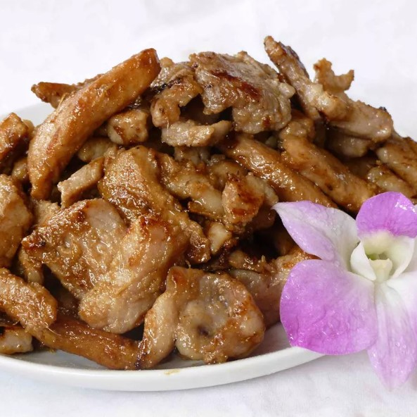

Japanese Ginger Pork
This homemade teriyaki chicken recipe is quick and easy to make with chicken thighs.
The flavors of ginger, garlic, and sesame in the sticky sauce will surely hit the spot! Serve over hot rice.

Ingredients
- 2 tablespoons soy sauce
- 2 tablespoons sake
- 2 tablespoons mirin
- 1 tablespoon grated fresh ginger root
- 1 pound thinly sliced pork loin
- 3 tablespoons vegetable oil
Directions
Step 1
Mix together soy sauce, sake, mirin, and ginger in a large bowl until combined. Add sliced pork;
stir to coat. Cover the bowl and marinate for about 1 hour.
Step 2
Heat oil in a large skillet or wok over high heat. Sauté pork in hot oil until browned and cooked through; discard marinade.
An instant-read thermometer inserted into pork should read at least 145 degrees F (63 degrees C).